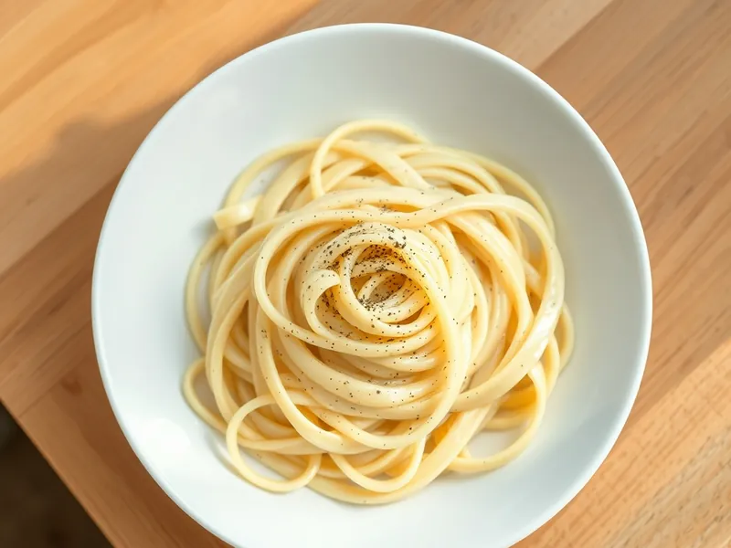

Фото: Иллюстрация ИИ, Cloudflare Workers AI
Феттучине Альфредо
Широкая паста в соусе из сливочного масла, сливок и пармезана
15 мин2 порц.759 ккал на порциюБ 23 · Ж 40 · У 73Итальянская кухня
Продукты на 2 порц.
- Макароны200 г
- Сливочное масло40 г
- Сливки 20%150 мл
- Пармезан60 г
- Мускатный орех по желанию1 щеп.
- Соль2 ч. л.
- Перец чёрный молотый1 щеп.
- Вода2000 мл
Как готовить
- Вскипятите воду на сильном огне, посолите и сварите феттучине или тальятелле по инструкции на упаковке, обычно 7-8 минут.
- В широкой сковороде растопите масло на слабом огне, влейте сливки и прогрейте 2-3 минуты, не доводя до бурного кипения.
- Пармезан натрите на мелкой тёрке.
- Откиньте пасту, оставив 50 мл воды, и переложите в сковороду со сливками.
- Снимите с огня, всыпьте пармезан и перемешивайте 1 минуту, подливая воду, пока соус не станет гладким и не обволочёт ленты пасты. Поперчите и подавайте сразу.
Совет. Пармезан кладите не на огне: на сильном жару он сворачивается комками. Соус быстро густеет, поэтому ешьте сразу.